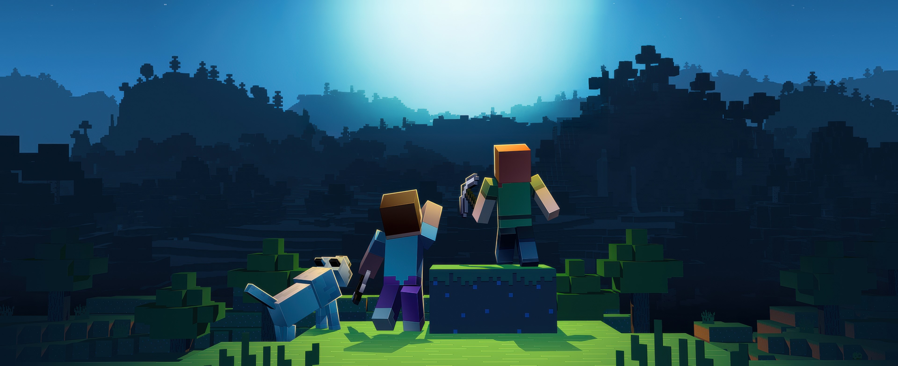

Bem-vindo(a) ao meu mundo!
Aqui é onde a criatividade e a loucura rolam solto
Aviso!!
Olá! Se chegou até aqui, saiba que não sei o que estou fazendo também. Esse pequeno site era para ser sobre mim, mas não sei falar de tal coisa, então aproveite algumas coisas aleatórias que eu aprecio.
Animais que eu achho legal
O Corvo

Uma ave genial! Usam ferramentas, planejam o futuro e sabem imitar sons e vozes humanas.
O Gato
Os gatos estão entre os animais de companhia mais populares do mundo.